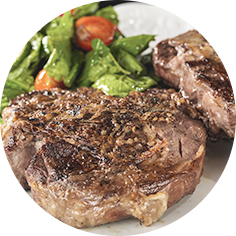
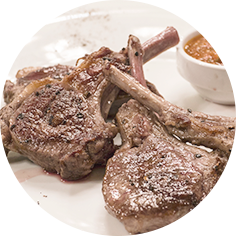

Название Самого Лучшего Ролика о Еде
Мясо используют разное, готовят мясо по-французски из говядины, мясо по-французски из свинины, мясо по-французски из курицы. Хотя мясо, как правило, режут на кусочки, делают и мясо по-французски с фаршем.
-

Соус:
Melt butter in heavy large saucepan over medium-high heat. Add shallots and sauté until tender, about 3 minutes. Stir in wine and Port. Boil 5 minutes. Add broth and rosemary sprig and boil until liquid is reduced to 1/3 cup, about 12 minutes. Strain sauce and set aside. (Can be prepared 1 day ahead. Cover and refrigerate.)
Мясо:
Heat oil in heavy large skillet over medium-high heat. Season steaks with salt and pepper. Add steaks to skillet and cook to desired doneness, about 4 minutes per side for medium-rare. Transfer steaks to platter. Tent with foil to keep warm.
Add sauce to skillet and bring to boil, scraping up any browned bits. Remove from heat. Gradually add butter, whisking just until melted. Stir
- 
Для соуса:
- 1 tablespoon butter
- 1/2 cup minced shallots (about 4 ounces)
- 1 cup dry Churchills Dry white
- 3/4 cup Churchills LBV
- 1 cup canned beef broth
- 1 sprig fresh rosemary or 1/2 teaspoon dried
Для мяса:
- 1 tablespoon olive oil
- 4 1-inch-thick beef tenderloin steaks (about 6 to 8 ounces each)
- 3 tablespoons chilled and unsalted butter
- 1 teaspoon chopped fresh rosemary or 1/4 teaspoon dried
оставьте ваш отзыв